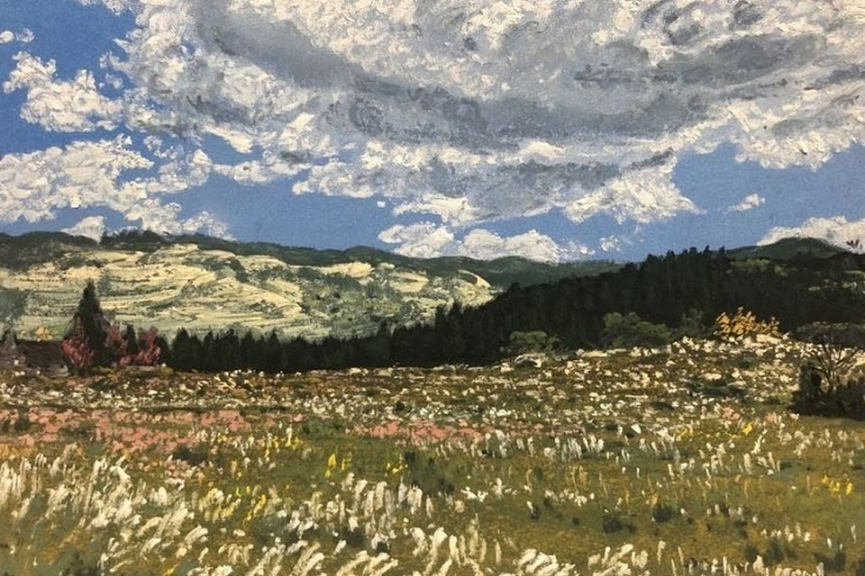

图片墙 · 第 1 式
齐边错落式
多张图片独立排列，通过上下错位形成节奏感



图注：四张同高，只把偶数张下移 66px：白边 7px 与双层投影让它们像摆在纸上。
图片墙 · 第 2 式
波浪贯通式
多张图片沿连续波浪曲线拼接，形成整体画面
图注：整条只起伏一次，四张等宽、左右出血铺满；缝里透出的是纸色。
图片墙 · 第 3 式
纵深渐进式
图片按纵向层次递进排列，营造空间纵深感
近端放大、远端收窄，右缘出血贴边；
八格沿垂直轴旋转 25°，靠透视而不是
斜切。
图片墙 · 第 4 式
不对称叶片式
图片以不对称弧形边缘连接，形成叶片般的视觉效果
图注：左端最厚、中间最薄、右端回升；整条由一条遮罩裁出，接缝处没有台阶。